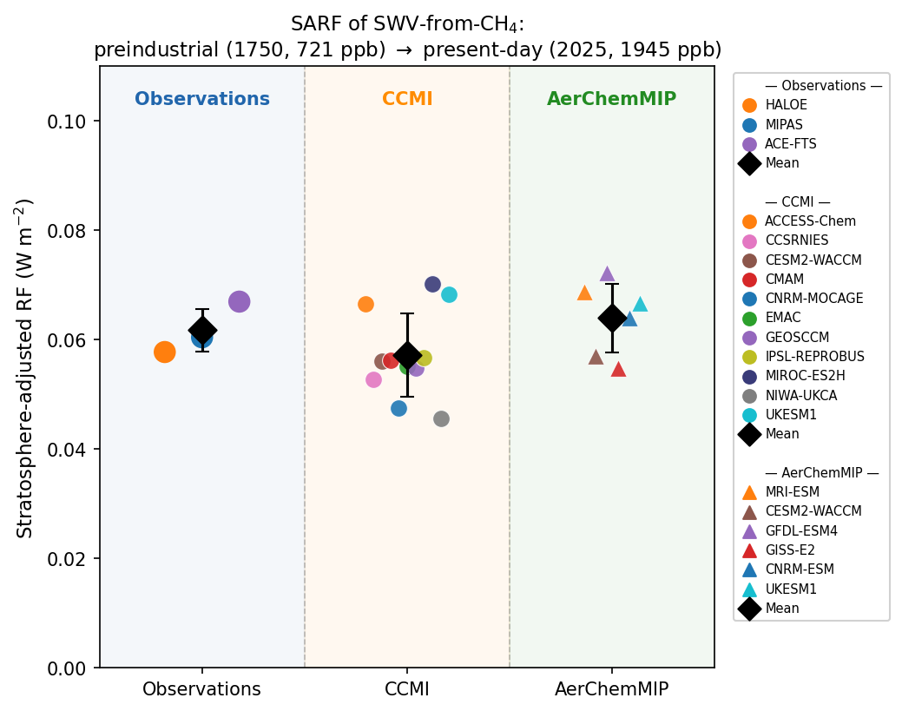

Satellite-constrained stratospheric water vapor radiative forcing from methane oxidation

Methane (CH4) is the second-largest contributor to anthropogenic radiative forcing among well-mixed greenhouse gases. Beyond its direct effect, methane also warms climate indirectly: as it is oxidized in the stratosphere, each molecule produces water vapor. Because the stratosphere is extremely dry, this added water vapor — a potent greenhouse gas — exerts a non-negligible additional forcing. Yet the stratospheric water vapor from methane oxidation (SWV-from-CH4) had previously been constrained by only limited observations.
In this work, I combine a 35-year, multi-instrument satellite CH4 record (HALOE, MIPAS, and ACE-FTS) with 15 chemistry–climate models from CCMI-2022 and AerChemMIP to estimate SWV-from-CH4 and its stratosphere-adjusted radiative forcing (SARF). Using an age-of-air framework, local stratospheric CH4 is compared with the abundance of the air mass when it entered through the tropical tropopause, isolating how much methane has been oxidized — and hence how much water vapor has been produced — along the way.
The satellite-constrained SARF is 0.062 W m−2 for the 1750–2025 methane increase — about 10% of methane's direct forcing — in close agreement with the CCMI (0.057 W m−2) and AerChemMIP (0.064 W m−2) ensemble means. The agreement shows that SWV-from-CH4 abundances are now well constrained, pointing to radiative transfer as the dominant remaining uncertainty. Applying the observationally constrained relationship to CMIP7 future pathways yields a 2100 forcing ranging from 0.02 to 0.11 W m−2 — a scenario spread comparable to the present-day forcing itself, highlighting an additional climate benefit of methane mitigation beyond reducing its direct warming.